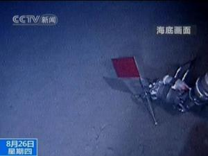

研制背景

为推动中国深海运载技术发展，为中国大洋国际海底资源调查和科学研究提供重要高技术装备，同时为中国深海勘探、海底作业研发共性技术，在国家海洋局组织安排下，中国大洋协会作为业主具体负责“蛟龙号”载人潜水器项目的组织实施，并会同中船重工集团公司七〇二所、中科院沈阳自动化所和声学所等约100家中国国内科研机构与企业联合攻关，攻克了中国在深海技术领域的一系列技术难关，经过6年努力，完成了载人潜水器本体研水面支持系统的研制和试验母船的改造以及潜航员的选拔和培训，从而使“蛟龙号”具备了开展海上试验的技术条件。
应用领域
1、运载科学家和工程技术人员进入深海，在海山、洋脊、盆地和热液喷口等复杂海底进行机动、悬停、正确就位和定点坐坡，有效执行海洋地质、海洋地球物理、海洋地球化学、海洋地球环境和海洋生物等科学考察。
2、“蛟龙号”具备深海探矿、海底高精度地形测量、可疑物探测与捕获、深海生物考察等功能，可以开展：对多金属结核资源进行勘查，可对小区地形地貌进行精细测量，可定点获取结核样品、水样、沉积物样、生物样，可通过摄像、照相对多金属结核覆盖率、丰度等进行评价等；对多金属硫化物热液喷口进行温度测量，采集热液喷口周围的水样，并能保真储存热液水样等；对钴结壳资源的勘查，利用潜钻进行钻芯取样作业，测量钴结壳矿床的覆盖率和厚度等；可执行水下设备定点布放、海底电缆和管道的检测，完成其他深海探询及打捞等各种复杂作业。